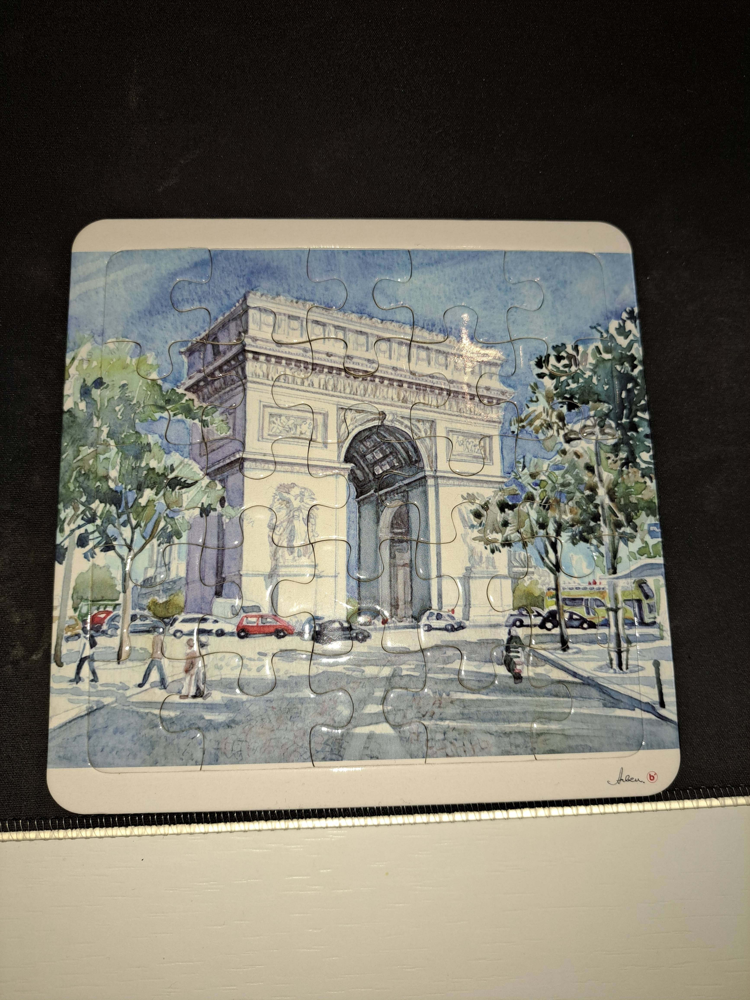
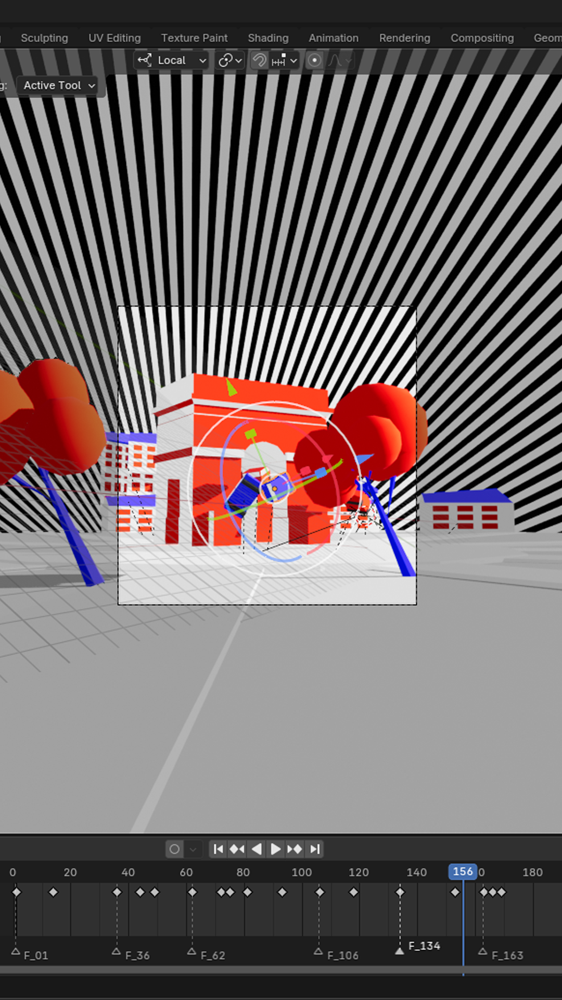
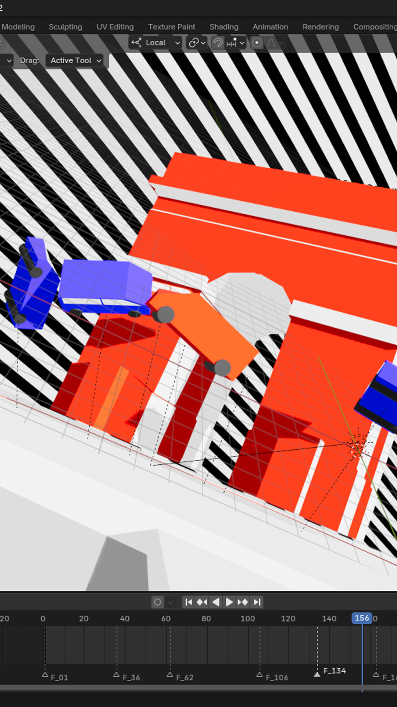
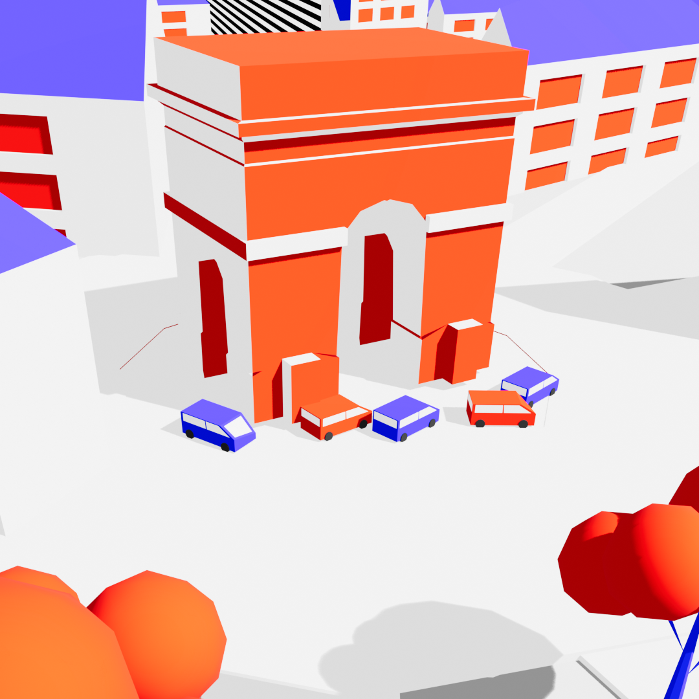
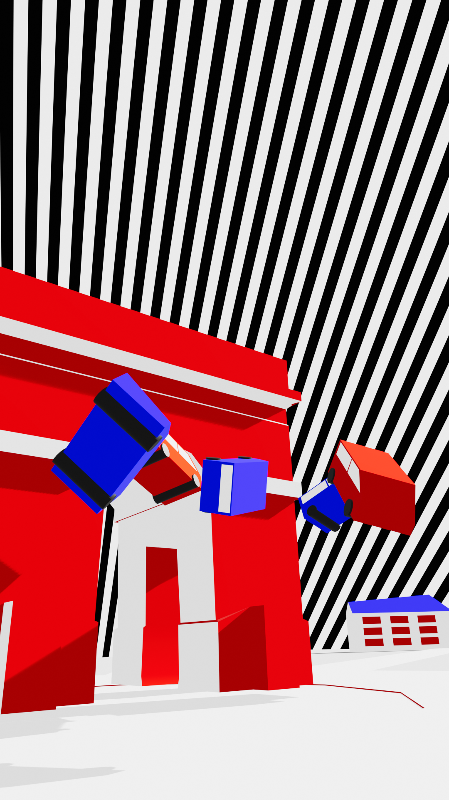
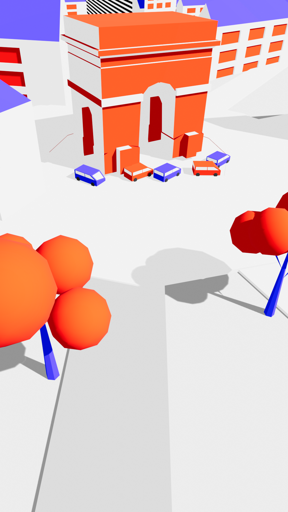
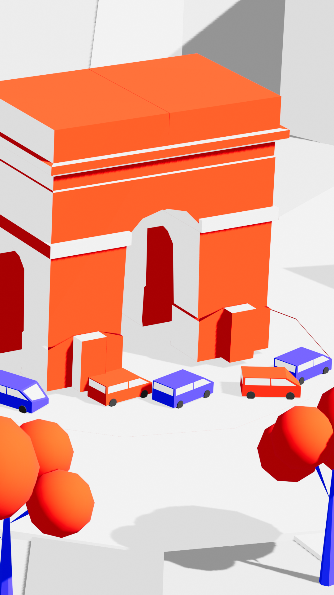
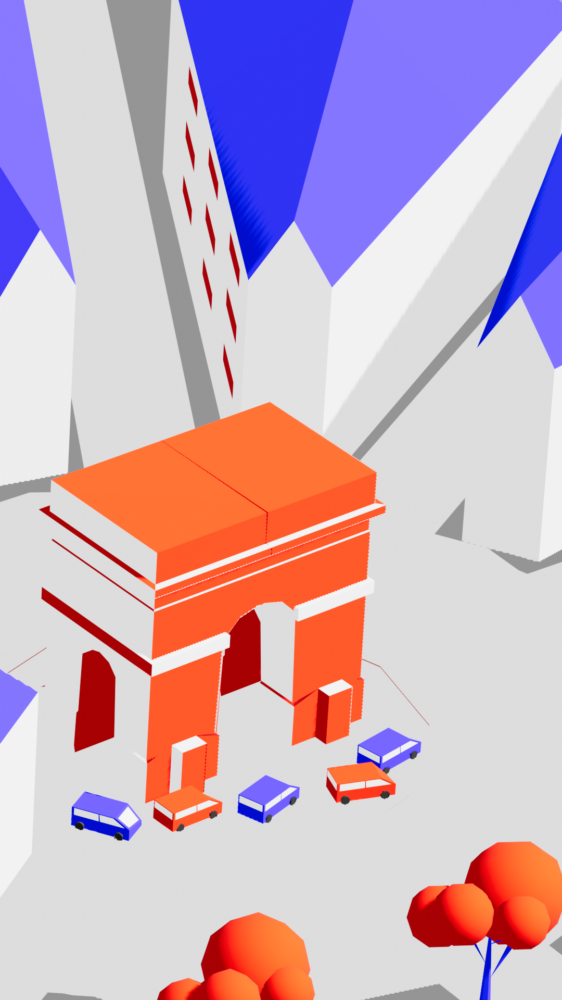

Een digitale herinterpretatie van de Arc de Triomphe, geïnspireerd door de minimalistische en grafische stijl van Malika Favre. Het project vertaalt de iconische architectuur naar een moderne, postkaartachtige compositie, waarbij de geometrische vormen en sterke kleurcontrasten kenmerkend zijn voor Favre's werk.
Het Ontwerp










Het Proces
Stijlanalyse
Bestudering van Malika Favre's kenmerkende minimalistische stijl en haar gebruik van negatieve ruimte.
Kleur
Bewuste keuze voor oranje, blauw en wit om contrast en diepte te creëren.
Compositie
Focus op geometrische vormen en gestileerde auto's als moderne elementen.
Technische Details
- Illustrator voor vectorvormen
- Blender voor 3D-compositie
- Gestreepte achtergrond als dynamisch element